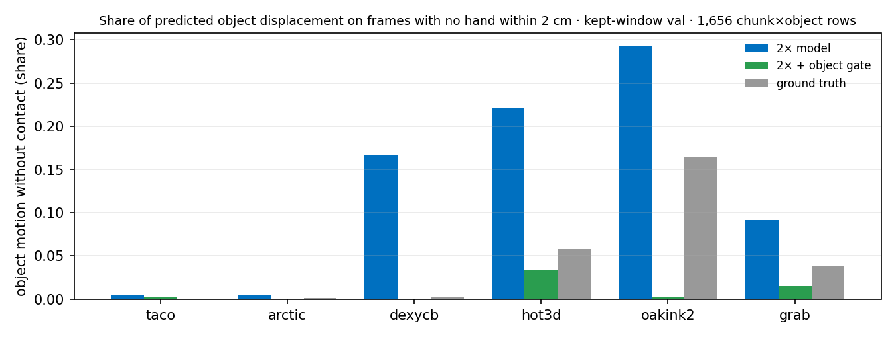

The 2× model with an object gate
3D-WAM · base_v3_trim 2× · one model, sampled with an inference-time contact gate on objects
Lab meeting
2026. 09. 07
Presented by 김범준 (beomjun)
Core idea and config · base_v3_trim 2× + object gate
- Core idea + config
- Interaction metrics
- GR-1 closed loop
- Reading
| input | model | output | decode | not used | claim |
|---|---|---|---|---|---|
| scene + embodiment as ONE dense labelled 3-D point set (hand 512 pts · object 256 pts · part labels) + 2 history frames + task text | language-conditioned flow-matching video-DiT predicts the TOTAL scene flow (hand + objects together) over the next 1 s · T = 10 @ 10 Hz | a 1 s trajectory for every input point, hand and objects in one prediction | hand flow → robot joints by per-link Procrustes + IK | no world model, no retargeter, no inverse dynamics | robot zero-shot execution of tasks demonstrated only by humans |
| object gate (sampling) · at every Euler step the clean estimate's OBJECT points stay at frame 0 until the predicted hand comes within 2 cm, then follow the prediction · blend τ₀ = 0.5 → 1 (smoothstep) · hands untouched · no training, no extra parameters | |||||
| sampler | |
|---|---|
| steps | 16 Euler steps · CFG 1.0 |
| object gate | τ₀ 0.5 · contact threshold 2 cm |
| rigid fit | none · keeps more carried motion |
| scope | every object instance · hands untouched |
| code · wam/eval/object_gate.py::ContactGatedObjectGuide | |
| data | |
|---|---|
| corpus | v2 · taco, arctic, dexycb, oakink2, grab, hot3d · 10 Hz · T = 10 |
| points | 512 / hand · 256 / object · ≤ 16 objects per chunk |
| index | part-aligned prefix · stored validity · motion filter on · chunk_stride 1 · chunks_per_episode 4 |
| contact | window filter, TRAIN index only · OakInk2 start 1.0 s / end 0.5 s · ARCTIC & GRAB end 0.5 s · 89.9 % of train chunks kept |
| frame | history H = 2 frames (0.1 / 0.2 s ago) · origin = hand centre + random jitter ≤ 1 m (origin_jitter_m 1.0) · yaw aug · up-axis z |
| text | T5-base, cached · entity phrases on · text dropout 0.05 |
| model | |
|---|---|
| backbone | video-DiT 120M · d 768 · depth 12 · heads 12 · mlp 4.0 · qk-norm |
| tokens | patch · k = 8 part-major Hilbert patches |
| attention | full 3-D attention · time-only RoPE |
| target | v-parameterisation · flow matching |
| conditioning | history channels · entity_text true |
| sampler | 16 Euler steps · CFG 1.0 (eval) |
| EMA | 0.999 |
| weights · /s3ckpt/beomjun/3dwam/base_v3_trim/weights_final.pt | |
| optimisation | |
|---|---|
| optimiser | AdamW · lr 3e-4 · betas 0.9 / 0.95 · wd 0.05 |
| schedule | warmup 300 · cosine to 0.1× · grad clip 1.0 |
| batch | 8 × 4 GPUs × accum 1 = eff 32 · micro_batch_points 98,304 · bucket by P |
| steps | 221,992 = 2 × 110,996 · resumed from the 1× weights |
| eff. epochs | ≈ 8.3 on the full v2 corpus · 9.2 on the kept train index |
| compute | 4 × H100 · ≈ 17 h total · ckpt every 30 min · iclr27 jobs 7784 → 8003 |
source: configs/base_v3_trim.yaml (verbatim) + the sampler flags · eff ep = steps × eff batch ÷ corpus chunks · the gate is applied at sampling time only; the weights are unchanged
Hand–object interaction metrics · kept-window val
- Core idea + config
- Interaction metrics
- GR-1 closed loop
- Reading
OMWC = share of predicted object displacement on frames where no predicted hand point is within 2 cm · onset = predicted first-contact frame − true first-contact frame · missed / false contact rates · dmin error = |predicted − true hand–object minimum distance| · contact-frame F1 · transport = predicted / true object displacement on true-contact frames · pair RMS = object-with-hand co-motion residual
| metric | 2× + object gate | ground truth |
|---|---|---|
| OMWC | 0.012 | 0.032 |
| onset error (frames of 0.1 s) | −0.03 (abs 0.10) | 0 |
| missed / false contact | 0.05 / 0.06 | 0 / 0 |
| dmin error cm | 3.21 | 0 |
| contact-frame F1 | 0.922 | 1 |
| transport | 0.85 | 1 |
| pair RMS cm/frame | 1.19 | 0 |
| object displacement cm/s | 5.49 | 6.81 |

| standard metrics · same 528 chunks | ADE cm | FDE cm | Acc5 % | Acc10 % | δ_avg % | minADE₅ cm |
|---|---|---|---|---|---|---|
| 2× + object gate | 7.50 | 13.03 | 62.7 | 76.3 | 59.9 | 5.18 |
| zero-motion predictor | 8.41 | 13.21 | 62.0 | 74.6 | 59.9 | — |
the gate changes none of the standard metrics beyond noise · interaction metrics computed per chunk×object on the kept-window val, hands and objects from the same k = 1 sample
GR-1 closed loop · 44-task sweep with the object gate
- Core idea + config
- Interaction metrics
- GR-1 closed loop
- Reading
base_v3_trim 2× + object gate · 221,992 st · 8.3 eff ep · zero-shot, no fine-tuning · each pair: ego view | 3-D point flow (executed | predicted)
| 44-task sweep · rlwrld job 161124 | |
|---|---|
| tasks run | 40 (4 sim-asset failures) |
| episodes | 120 |
| successes | 0 |
| median final hand–object distance | 20.2 cm |
| mean final hand–object distance | 30.7 cm |
| object motion in sim · replans with the hand within 10 cm | cm/s | OMWC |
|---|---|---|
| PnPCanToBowl | 9.6 | 0.05 |
| PnPCounterToCuttingBoard | 6.8 | 0.05 |
3 episodes per task · human tag · two objects · 256 object points · replan every 4 executed frames · object gate 2 cm, τ₀ 0.5 (the loop's gate_mm 25 is the IK palm-fit gate, unrelated) · results.json: sweep_0907_trim2x_objgate/<task>, episodes[0]
Reading · what the gate shows
- Core idea + config
- Interaction metrics
- GR-1 closed loop
- Reading
Reach, not contact, is the next lever
- Objects stop floating without contact
- Every standard metric unchanged
- GR-1 success unchanged, hand stops short
| sampler ablation, same weights | before the gate | with the gate |
|---|---|---|
| OMWC · kept-window val (ground truth 0.032) | 0.121 | 0.012 |
| OMWC · sim, PnPCanToBowl | 0.29 | 0.05 |
| object motion · sim, PnPCanToBowl · cm/s | 10.8 | 9.6 |
| final hand–object distance · PnPCanToBowl · median of 3 ep · cm | 16.9 | 16.5 |
the gate is a sampling-time change on this model's own outputs, not a second model · sim ungated numbers from sweep_0906_trim2x/PnPCanToBowl, gated from sweep_0907_trim2x_objgate/PnPCanToBowl